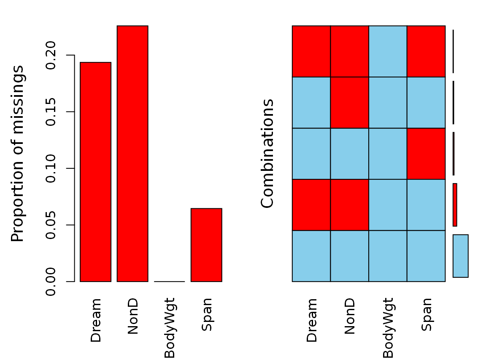
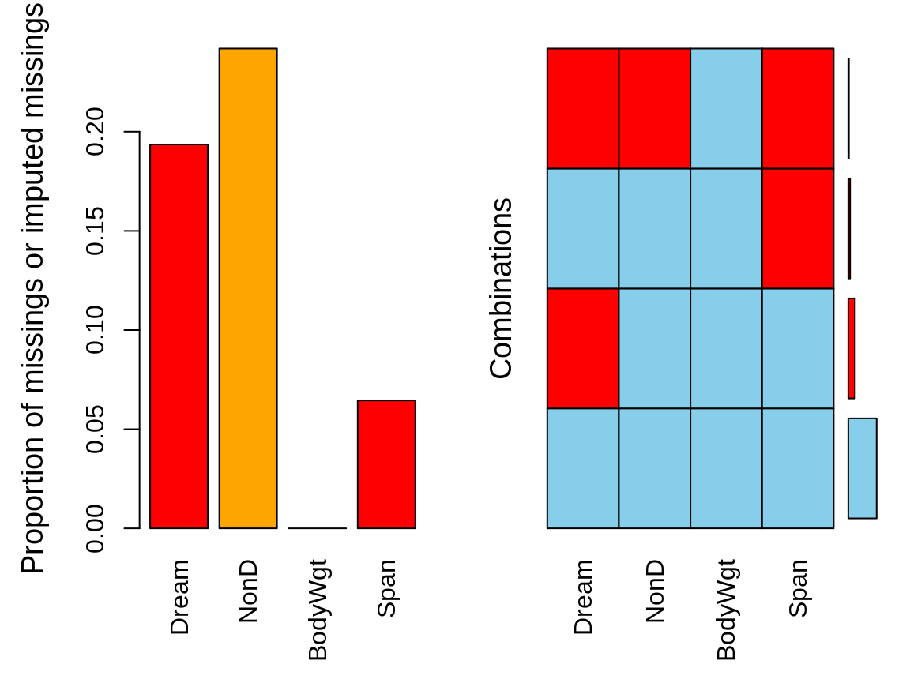
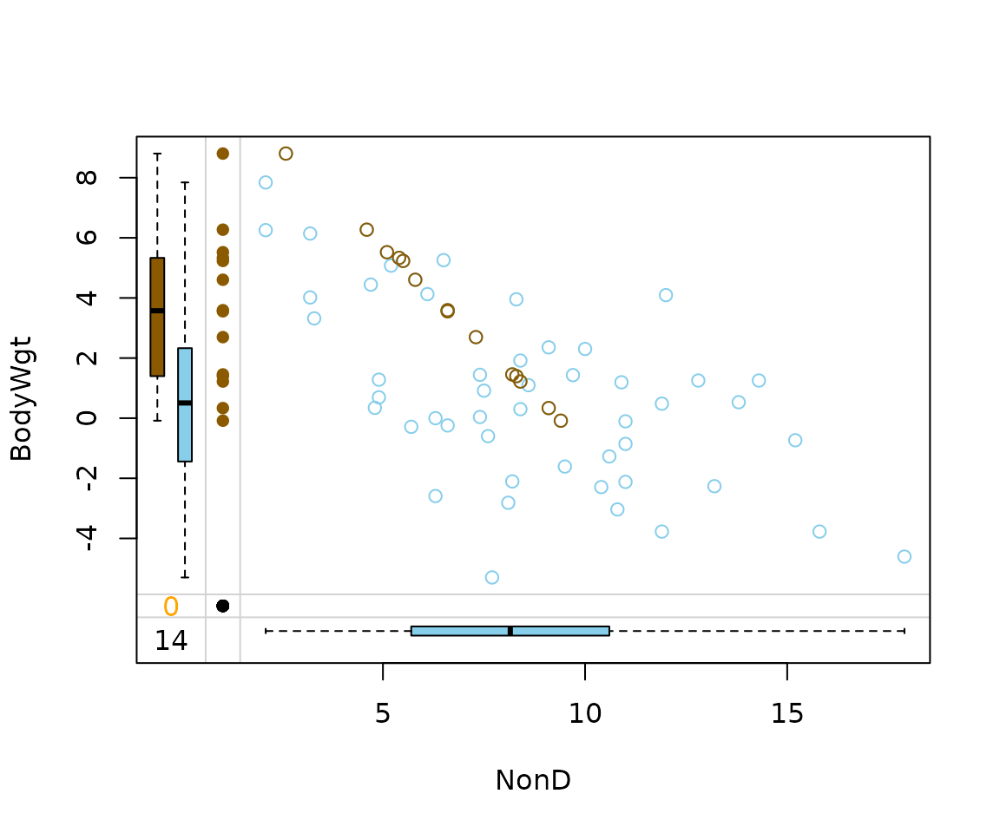
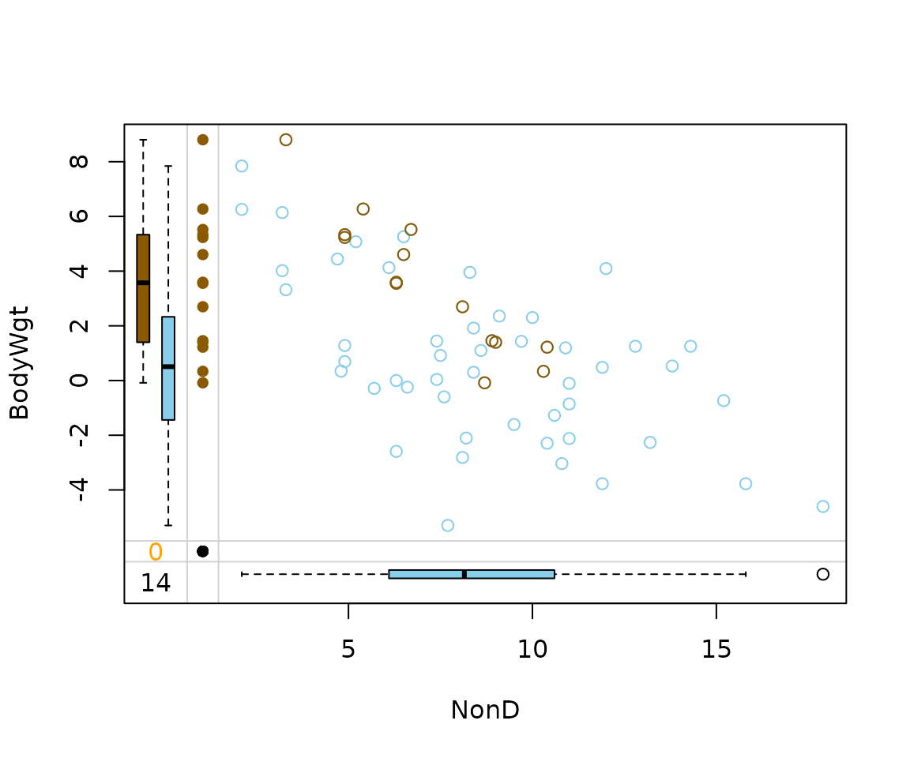
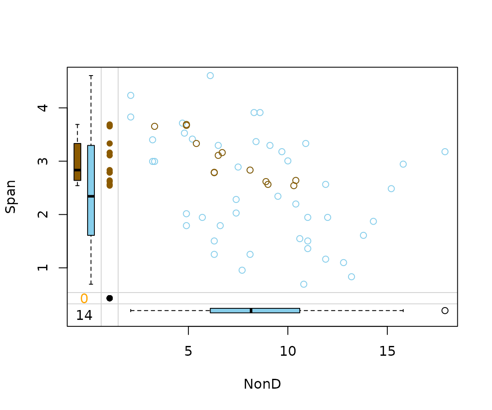
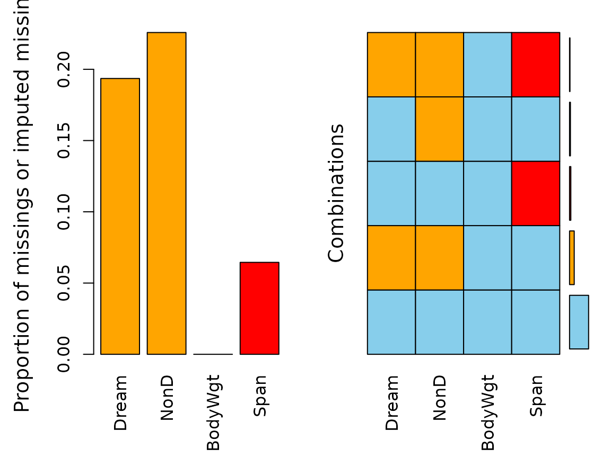
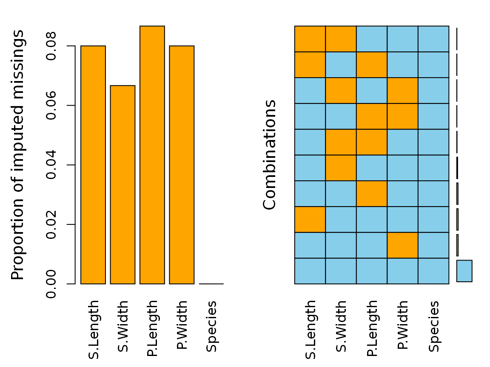

This vignette showcases the functions regressionImp()
and rangerImpute(), which can both be used to generate
imputations for several variables in a dataset using a formula
interface.
Data
For data, a subset of sleep is used. The columns have
been selected deliberately to include some interactions between the
missing values.
library(VIM)
dataset <- sleep[, c("Dream", "NonD", "BodyWgt", "Span")]
dataset$BodyWgt <- log(dataset$BodyWgt)
dataset$Span <- log(dataset$Span)
aggr(dataset)
str(dataset)
#> 'data.frame': 62 obs. of 4 variables:
#> $ Dream : num NA 2 NA NA 1.8 0.7 3.9 1 3.6 1.4 ...
#> $ NonD : num NA 6.3 NA NA 2.1 9.1 15.8 5.2 10.9 8.3 ...
#> $ BodyWgt: num 8.803 0 1.2194 -0.0834 7.8427 ...
#> $ Span : num 3.65 1.5 2.64 NA 4.23 ...Imputation
In order to invoke the imputation methods, a formula is used to
specify which variables are to be estimated and which variables should
be used as regressors. We will start by imputing NonD based
in BodyWgt and Span.
imp_regression <- regressionImp(NonD ~ BodyWgt + Span, dataset)
#> There still missing values in variable NonD . Probably due to missing values in the regressors.
imp_ranger <- rangerImpute(NonD ~ BodyWgt + Span, dataset)
aggr(imp_regression, delimiter = "_imp")
We can see that for regrssionImp() there are still
missings in NonD for all observations where
Span is unobserved. This is because the regression model
could not be applied to those observations. The same is true for the
values imputed via rangerImpute().
Diagnosing the results
As we can see in the next two plots, the correlation structure of
NonD and BodyWgt is preserved by both
imputation methods. In the case of regressionImp() all
imputed values almost follow a straight line. This suggests that the
variable Span had little to no effect on the model.
imp_regression[, c("NonD", "BodyWgt", "NonD_imp")] |>
marginplot(delimiter = "_imp")
For rangerImpute() on the other hand, Span
played an important role in the generation of the imputed values.
imp_ranger[, c("NonD", "BodyWgt", "NonD_imp")] |>
marginplot(delimiter = "_imp")
imp_ranger[, c("NonD", "Span", "NonD_imp")] |>
marginplot(delimiter = "_imp")
Imputing multiple variables
To impute several variables at once, the formula in
rangerImpute() and regressionImp() can be
specified with more than one column name in the left hand side.
imp_regression <- regressionImp(Dream + NonD ~ BodyWgt + Span, dataset)
#> There still missing values in variable Dream . Probably due to missing values in the regressors.
#> There still missing values in variable NonD . Probably due to missing values in the regressors.
imp_ranger <- rangerImpute(Dream + NonD ~ BodyWgt + Span, dataset)
aggr(imp_regression, delimiter = "_imp")
Again, there are missings left for both Dream and
NonD.
Performance of method
In order to validate the performance of regressionImp()
the iris dataset is used. Firstly, some values are randomly
set to NA.
library(reactable)
data(iris)
df <- iris
colnames(df) <- c("S.Length","S.Width","P.Length","P.Width","Species")
# randomly produce some missing values in the data
set.seed(1)
nbr_missing <- 50
y <- data.frame(row=sample(nrow(iris),size = nbr_missing,replace = T),
col=sample(ncol(iris)-1,size = nbr_missing,replace = T))
y<-y[!duplicated(y),]
df[as.matrix(y)]<-NA
aggr(df)
We can see that there are missings in all variables and some
observations reveal missing values on several points. In the next step
we perform a multiple variable imputation and Species
serves as a regressor.
imp_regression <- regressionImp(S.Length + S.Width + P.Length + P.Width ~ Species, df)
aggr(imp_regression, delimiter = "imp")
The plot indicates that all missing values have been imputed by the
regressionImp() algorithm. The following table displays the
rounded first five results of the imputation for all variables.